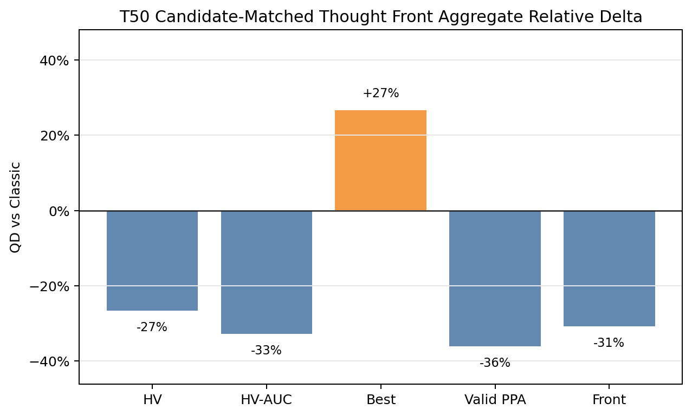
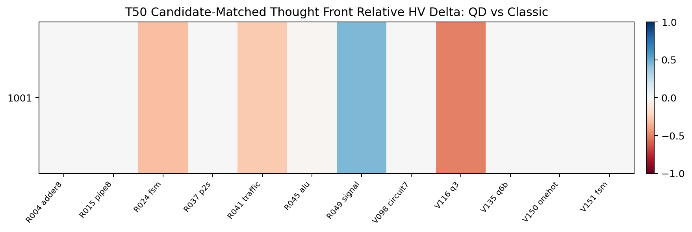
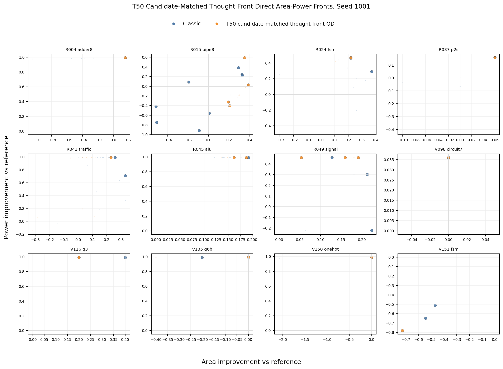
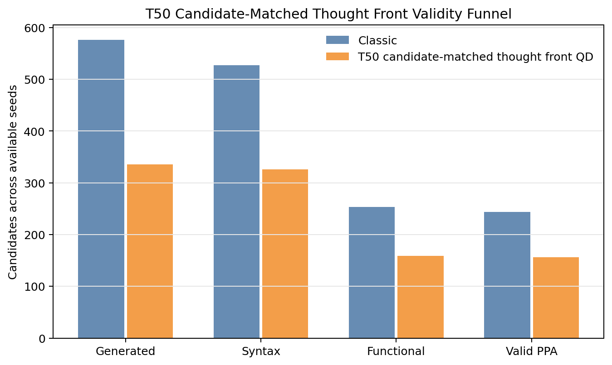
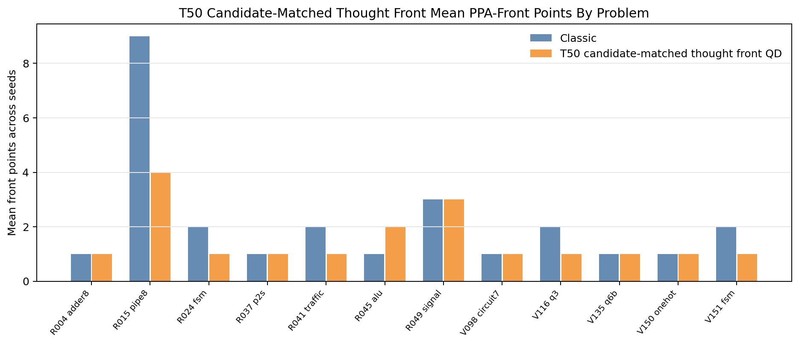

T50 Direct PPA Pareto Supplement
Static reader-facing figures for the completed 12 of 13 hard-screen
problems. T50 is diagnostic evidence, not a promoted QD lead.
-26.6%Mean HV
-32.7%Mean HV-AUC
+26.7%Mean best score
-36.1%Valid PPA
-30.8%Front points
0Classic-covered losses
10Yield warnings
Aggregate Direction

T50 raises mean best score but loses the QD-relevant HV, HV-AUC, valid-PPA, and front-point metrics.
Paired HV Heatmap

Blue favors T50 and red favors classic; the result does not support promotion despite several local ties or wins.
Direct Area-Power Fronts

Direct area-power panels show that the candidate-matched run still collapses front diversity on several problems.
Validity And Front Coverage

The funnel separates generated-candidate budget from usable PPA yield; T50 evaluates fewer total candidates than classic in this partial screen.

Front counts remain below classic overall, which blocks the method as a larger RTLLM candidate.